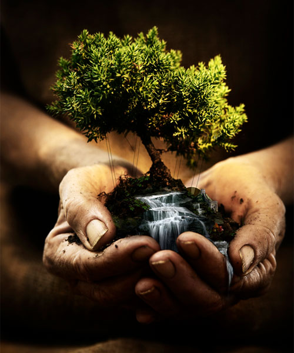

Celebramos el Día Internacional de la Madre Tierra para recordar que el planeta y sus ecosistemas nos dan la vida y el sustento.
Con esta celebración admitimos la responsabilidad colectiva, como nos recordaba la Declaración de Río de 1992, de fomentar la harmonía con la naturaleza y la Madre Tierra para alcanzar el equilibrio justo entre las necesidades económicas, sociales y medioambientales de las generaciones presentes y futuras.

Tener una conciencia ecológica, es entender que somos dependientes de la naturaleza y responsables por su estado de conservación. Ignorar esta verdad equivale a autodestruirnos, porque al degradar el medio ambiente estamos empeorando nuestra calidad de vida y poniendo en peligro el futuro de nuestros descendientes.

Descubre, cuales son los Días internacionales más importantes
Descubre algunos datos y estadísticas sobre la contaminación
Conoce algunas de las mejores energías limpias para consumo
Conoce algunas campañas creadas en la CDMX contra contaminantes
Conoce datos y estadísticas del estado actual de la Ciudad de México
Descrubre cuales son los lugares más contaminados del mundo
Conoce algunas cifras y datos importantes de la Biodiversidad
Conoce y asómbrate con algunos datos acerca del posible futuro
con contaminación


Aproximadamente el 71 % de la superficie terrestre está cubierta de agua, aunque aproximadamente solo el 2 % es potable (dulce), y por ello debe conservarse y cuidarse.


Contaminación del suelo causada por depósitos subterráneos de almacenamiento de alquitrán. Los productos químicos más comunes incluyen derivados del petróleo, solventes, pesticidas y otros metales pesados. Este fenómeno está estrechamente relacionado con el grado de industrialización e intensidad del uso de productos químicos.


Contaminación del suelo causada por depósitos subterráneos de almacenamiento de alquitrán. Los productos químicos más comunes incluyen derivados del petróleo, solventes, pesticidas y otros metales pesados. Este fenómeno está estrechamente relacionado con el grado de industrialización e intensidad del uso de productos químicos.
Contaminación del suelo causada por depósitos subterráneos de almacenamiento de alquitrán. Los productos químicos más comunes incluyen derivados del petróleo, solventes, pesticidas y otros metales pesados. Este fenómeno está estrechamente relacionado con el grado de industrialización e intensidad del uso de productos químicos.
Contaminación del suelo causada por depósitos subterráneos de almacenamiento de alquitrán. Los productos químicos más comunes incluyen derivados del petróleo, solventes, pesticidas y otros metales pesados. Este fenómeno está estrechamente relacionado con el grado de industrialización e intensidad del uso de productos químicos.
Contaminación del suelo causada por depósitos subterráneos de almacenamiento de alquitrán. Los productos químicos más comunes incluyen derivados del petróleo, solventes, pesticidas y otros metales pesados. Este fenómeno está estrechamente relacionado con el grado de industrialización e intensidad del uso de productos químicos.
Contaminación del suelo causada por depósitos subterráneos de almacenamiento de alquitrán. Los productos químicos más comunes incluyen derivados del petróleo, solventes, pesticidas y otros metales pesados. Este fenómeno está estrechamente relacionado con el grado de industrialización e intensidad del uso de productos químicos.
Contaminación del suelo causada por depósitos subterráneos de almacenamiento de alquitrán. Los productos químicos más comunes incluyen derivados del petróleo, solventes, pesticidas y otros metales pesados. Este fenómeno está estrechamente relacionado con el grado de industrialización e intensidad del uso de productos químicos.


 1
1 2
2 3
3 6
6


 3
3 4
4 6
6